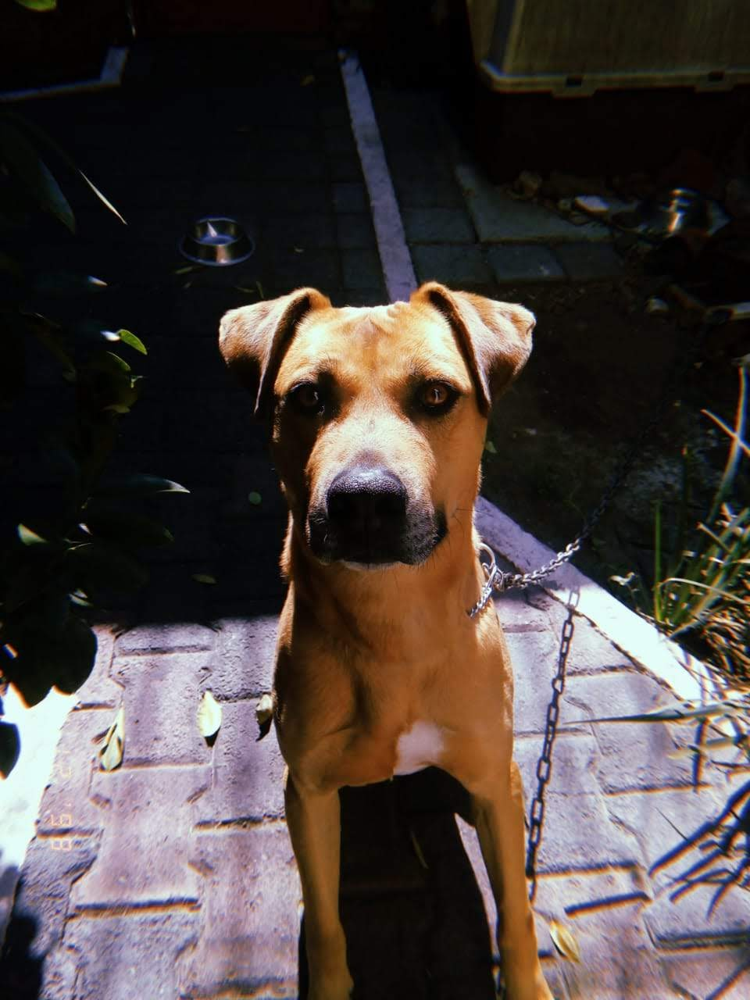

Canciones favoritas del momento
- Bloodstream - Lost Frequencies
- Save Room - John Legend
- Tompkins Square Park - Mumford & Sons
- The Motto - Ava Max y Tiësto
- Nicht nichts - AnnenMayKantereit
- Hand in Hand - Beatsteaks
Mascotas
| Zeus | Perry |
|---|---|
 |
 |
Artistas favoritos
- Albúm favorito
- Cloud Nine - Kygo
- Canción favorita del momento
- Can't Get You out of My Head (Cover) - AnnenMayKantereit x Parcels
- Arctic Monkeys
- Whatever People Say I Am, That's What I'm Not
- Favourite Worst Nightmare
- Humbug
- Suck It and See
- AM
- Tranquility Base Hotel & Casino
- Twenty One Pilots
- The Kooks
- Último concierto al que fui
- Lost Frequencies
Películas favoritas
La vdd no tengo un top, estas son de las que me acuerdo ahorita xd
- Reyes de las olas
- Los miserables
- Sagas:
- Harry Potter
- Volver al futuro
- The Dark Knight
Crush famosa
Tampoco tengo un top jaja
- Amanda Seyfried